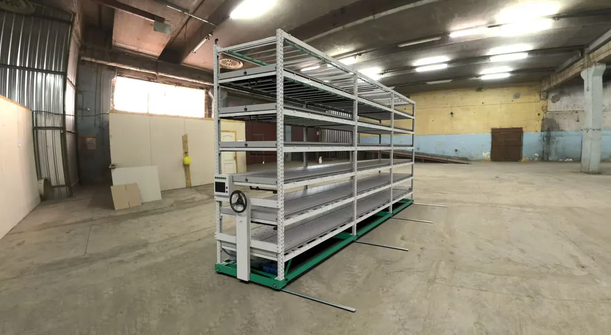
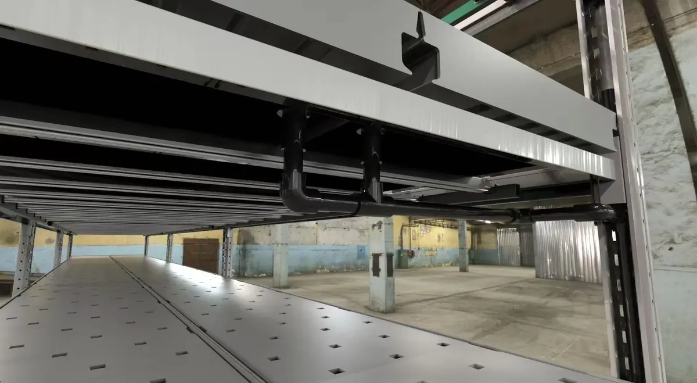
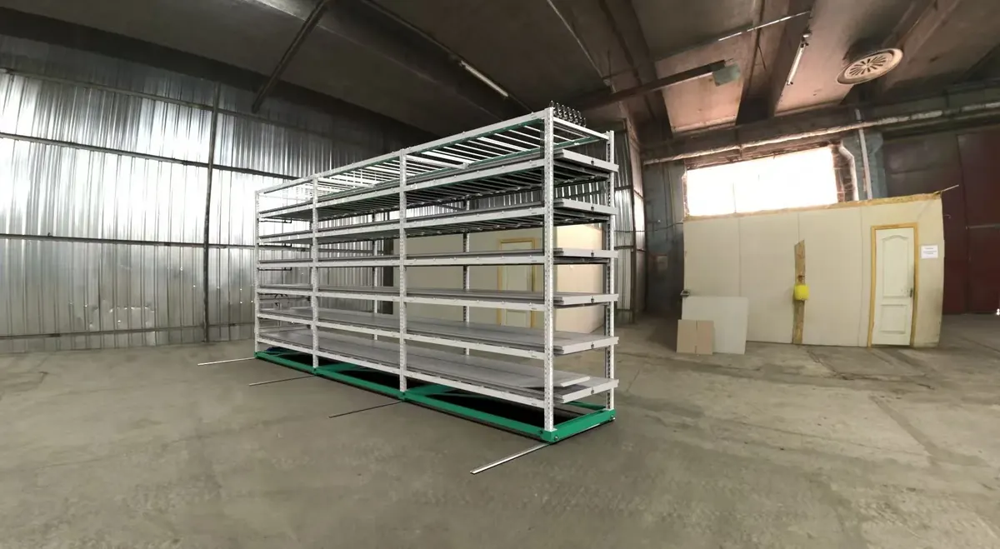
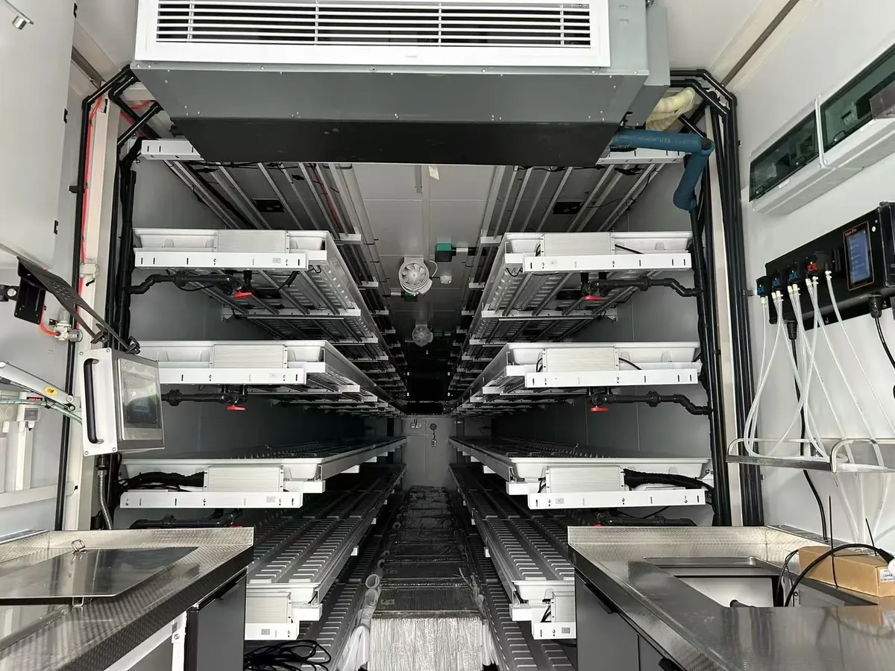

Equipment Categories
Browse all vertical farming equipment



// real product photos from VTCFaRM vertical rack production.
Category 01 — Racks & Shelving
Modular Vertical Grow Racks
Hot-dip galvanised steel grow racks designed for maximum plant density in minimum floor space. Available in 3 to 10 tiers. Extendable to any length. The VTC-7t-3 is our flagship model with 7 tiers and 43.1m² canopy per line.
Hot-Dip Galvanised Steel Frame
Corrosion-resistant, rated for commercial grow loads. Bolt-together assembly — no welding on site. Each module 3-set wide with unlimited length extension.
SL-778 Sliding Hydroponic Trays
778mm wide UV-resistant PP trays with smooth sliding rail system. 20 trays per rack maximum splice. Easy harvest access — pull tray out fully without stooping.
Canopy Area Formula
Canopy Area (m²) = 0.81 × Length × Tiers. A 7t-3 rack line at 7.7m yields 43.1m² canopy with 1,960 plants per line.
| Specification | VTC-7t-3 (Flagship) |
|---|---|
| Model | VTC-7t-3 — 7 Tiers / 3 Sets |
| Overall Size | 7,666 × 950 × 4,400mm |
| Canopy Area | 43.1 m² per line |
| Plant Capacity | 1,960 plants per line |
| Tray Width | 778mm (SL-778) |
| Tier Range | 3 to 10 tiers (custom) |
| Frame | Hot-dip galvanised steel |
| Tray Material | UV-resistant PP — 5–10 year lifespan |
| Price | From USD $500/unit | Project-based quote |


// real product photo — VTCFaRM SCC-G800 LED grow light.
Category 02 — LED Grow Lights
Full-Spectrum LED Grow Lighting
High-efficiency full-spectrum LED grow light bars and panels. Available in multiple wattages (40W to 480W). Dimming, scheduling, and spectrum control built-in. Custom light recipes for each crop type and growth stage.
Full Spectrum — Veg, Bloom & Propagation
Tunable spectrum covering 380–780nm. Dedicated veg mode (blue-heavy), bloom mode (red-heavy), and propagation mode. UV and IR supplemental diodes available.
Verified PPFD Data Provided
Every LED product comes with PPFD distribution maps at 20cm, 30cm, and 50cm mounting heights. No guesswork — you know exactly what light intensity your plants receive.
Dimming & Scheduling Control
0–10V dimming standard on all models. Timer integration with IoT system. Dynamic sunrise/sunset simulation. 40% energy saving vs HPS at equivalent PPFD levels.
Typical PPFD Values by Crop

// real product photos from VTCFaRM irrigation systems.
Category 03 — Irrigation Control
Automated Irrigation Systems
Complete irrigation control systems including pumps, timers, dosing units, EC/pH sensors, and reservoirs. Available for NFT, DWC, and Flow & Drain configurations. Semi-automated or fully automated. VTCFaRM does not supply aeroponic systems.
NFT — Nutrient Film Technique
Thin stream of nutrient solution flows continuously along the bottom of channels. Highly oxygen-rich at the roots. Best for leafy greens and herbs. Low water consumption.
Available
DWC — Deep Water Culture
Plants suspended with roots submerged in oxygenated nutrient solution. Extremely fast growth rates. Best for cannabis, lettuce, herbs. High-yield, simple to operate.
Available
Flow & Drain — Ebb & Flow
Timed flood-and-drain cycles. Nutrient solution floods growing trays then drains to reservoir. Reliable, simple, low-maintenance. Standard in 5-tier container systems.
Available
Aeroponic Systems
VTCFaRM does not manufacture or supply aeroponic irrigation systems. Our three supported irrigation methods are NFT, DWC, and Flow & Drain. Please contact us if you have questions about the best system for your crop.
Not Available


// real product photos. rack structure shown; dry rack configuration available on request.
Category 04 — Dry Racks
Post-Harvest Dry Racks for Medical Plants
Dedicated hanging dry rack systems for post-harvest drying of cannabis flowers and medicinal plant material. Designed for integration inside container farms or standalone drying rooms. Climate-controlled drying environment.
Hanging Bar System
Multiple horizontal hanging bars at adjustable heights. Accommodates both whole-plant hanging and trimmed branch drying. Galvanised steel construction, food-safe coating.
Ventilated Drying Environment
Designed to work with HVAC, dehumidification, and oscillating fans to maintain 45–55% RH and 15–20°C — the optimal range for slow, quality-preserving drying of medicinal plants.
Container Integration
Dry rack module fits inside one end of a 40ft HC container. Can be combined with a growing zone in the same container or installed in a dedicated drying container.
Custom Capacity
Rack capacity and bar count configured per project. From small hobby-scale to commercial pharmaceutical drying. GMP-compatible materials available.

// real product photos from VTCFaRM container installations.
Category 05 — Environmental Controls
HVAC, Dehumidifiers & CO₂ Systems
Complete environmental control packages for indoor farms. HVAC units, industrial dehumidifiers, CO₂ enrichment, fresh air exchange, and oscillating circulation fans — all integrated via the IoT control platform.
HVAC — Heating, Ventilation & Air Conditioning
Inverter split systems from 1.5HP to 20HP. Grade-1 energy efficiency. Configured for crop-specific temperature targets (±0.5°C accuracy). Cannabis-grade precision available.
Industrial Dehumidifiers
High-capacity dehumidification (10–200L/day) for humidity-sensitive crops, especially cannabis post-harvest and fruiting crops. Integrated with HVAC for full atmospheric control.
CO₂ Enrichment Systems
Compressed CO₂ or CO₂ generator with sensor-controlled delivery. Maintains 800–1500ppm during photoperiod for accelerated photosynthesis. Increases yield 20–30%.
Fresh Air Exchange & Circulation
Full heat exchange units recover energy from exhaust air. Adjustable volume 150–1,000m³/h. Oscillating fans maintain uniform temperature and prevent hot spots between tiers.


// real product photos from VTCFaRM nutrient delivery systems.
Category 06 — Nutrient Management
Dosing Systems, pH Control & Nutrients
Complete nutrient management solutions including automated dosing systems, EC/pH meters and controllers, liquid fertilizer (own-brand ODM), and rockwool substrate. Everything for a closed-loop recirculating hydroponic system.
Automated Dosing Systems
Peristaltic dosing pumps with EC and pH sensors for continuous monitoring and automatic adjustment. Supports 2-part, 3-part, and A+B+C nutrient formulas. Alarm on drift.
Own-Brand Liquid Nutrients (ODM)
VTCFaRM liquid fertilizer — ODM formulated for leafy greens, fruiting crops, and medicinal plants. Precise formulation, low salt index. Available for purchase alongside equipment.
Rockwool & Substrate Supply
Custom-branded rockwool cubes and slabs. Environmentally responsible formulation with excellent root aeration and water retention. Compatible with NFT, DWC, and Flow & Drain.
Supported Crops
All crop types — our equipment grows it
Build a Complete Vertical Farm
Combine racks, LED, irrigation, climate control, and nutrient management into one complete farm package. We design the layout, supply all equipment, and support installation globally. Factory direct pricing. One supplier, one point of contact.